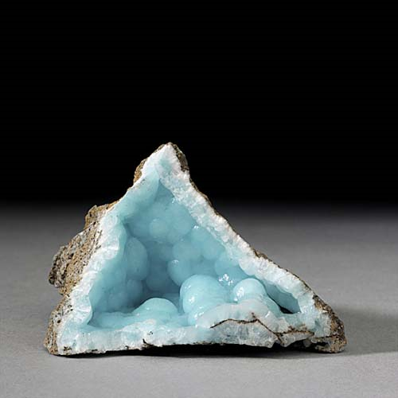

Hemimorphite - Zn4[Si2O7](OH)2·H2O
Sorosilicates


Habit: Usually colorless or white; less commonly pale yellow, light green, sky blue or brown. Isolated or radiating groups of distinctly hemimorphic crystals, prismatic and flattened to a greater or lesser degree parallel to {010}; also botryoidal, massive, granular or fibrous or form incrustations. Vitreous luster; transparent to translucent. White streak.
Environment: A widespread phase in the oxidation zone of zinc deposits.
Etymology: From the Greek hemi, meaning "half," and morphie, meaning "form," a reference to its crystal form.